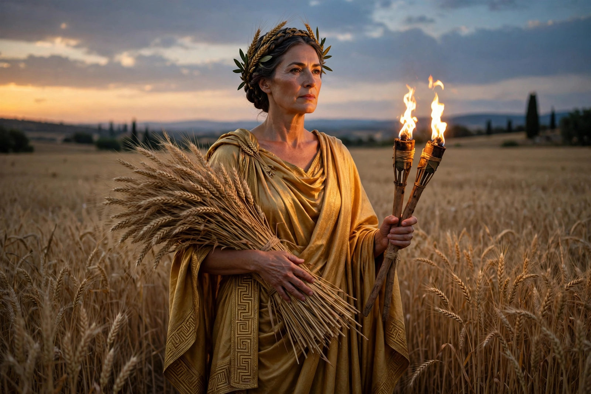

From Wikipedia, the free encyclopedia
| Demeter | |
|---|---|
| Affiliation | Greek mythology; goddess of the harvest, grain and agriculture |
| Parents | Cronus and Rhea |
| Children | Persephone; Plutus |
| Symbols | Sheaf of wheat, cornucopia, torch, poppy |
| Chief cult | Eleusis (the Eleusinian Mysteries) |
| Roman counterpart | Ceres |

Demeter is the Greek goddess of the harvest, grain and the fertility of the earth, whose gift of agriculture civilised humankind and whose grief drives the seasons. Daughter of Cronus and Rhea, sister of Zeus and Hera, she is the mother of Persephone, and the search for her stolen daughter — told in the Homeric Hymn to Demeter — is the charter myth of the Eleusinian Mysteries, the most famous secret cult of the ancient world, which promised initiates hope in the face of death.
When Hades carried Persephone to the underworld with Zeus's connivance, Demeter heard her cry and wandered the earth nine days with torches, neither eating nor bathing, until Hecate and Helios told her the truth. Disguised as an old woman she came to Eleusis and nursed the royal child Demophon, anointing him with ambrosia and laying him in the fire at night to burn away his mortality — until his mother's terrified cry broke the rite. Then she revealed herself, demanded a temple, and in her wrath withheld the harvest: the earth lay barren, and mankind faced starvation and the gods the loss of sacrifice, until Zeus brokered Persephone's partial return. Demeter then restored the earth's fertility and taught the Eleusinian kings the Mysteries.
As Thesmophoros, "law-bringer", Demeter presided over the women's festival of the Thesmophoria, tied to fertility and the sowing season; as giver of grain she is the patroness of the settled, lawful, agricultural life itself — Demeter's grain and Poseidon's sea mark the boundary between civilisation and wildness. Her Roman form, Ceres, gives English "cereal". The Mysteries at her Eleusinian sanctuary drew initiates — slaves and emperors alike — for nearly two thousand years, and their secret, never betrayed in antiquity, was held to be an experience rather than a doctrine: something seen, in the goddess's presence, that changed how the initiate faced death.
Greek mythology · Persephone · Hades · Hera · Zeus